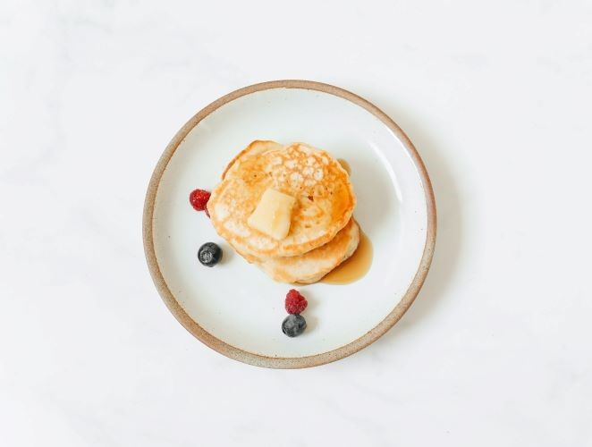

Pancakes
Fluffy and delicious, these pancakes are perfect for a satisfying breakfast or brunch. Whip up a batch and enjoy with your favorite toppings!
Ingredients
- 1 cup all-purpose flour
- 2 tablespoons sugar
- 1 teaspoon baking powder
- 1/2 teaspoon baking soda
- 1/2 teaspoon salt
- 1 cup buttermilk
- 1 egg
- 2 tablespoons melted butter
Instructions
- In a mixing bowl, whisk together the dry ingredients: flour, sugar, baking powder, baking soda, and salt.
- In another bowl, beat the egg and mix in the buttermilk and melted butter.
- Pour the wet ingredients into the dry ingredients and mix until just combined. Be careful not to overmix; a few lumps are okay.
- Preheat a griddle or non-stick skillet over medium heat.
- Spoon batter onto the griddle to form pancakes.
- Cook until bubbles form on the surface, then flip and cook until golden brown.
- Serve warm with your favorite toppings.